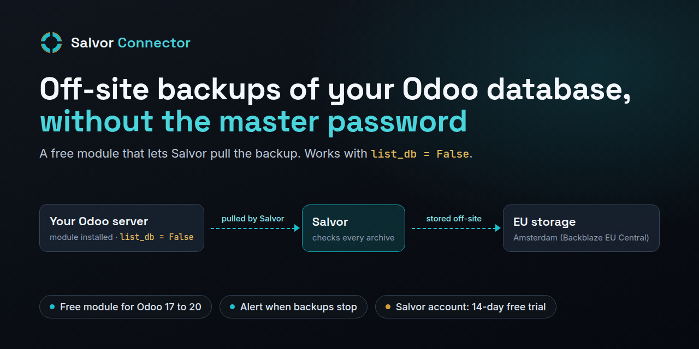
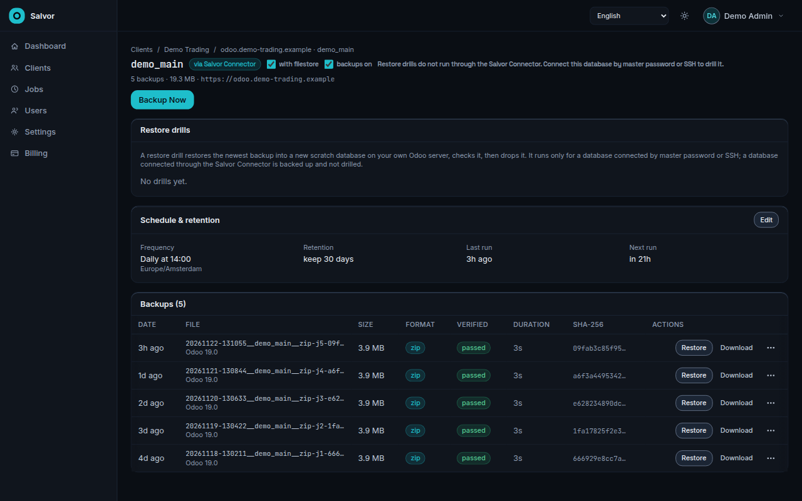
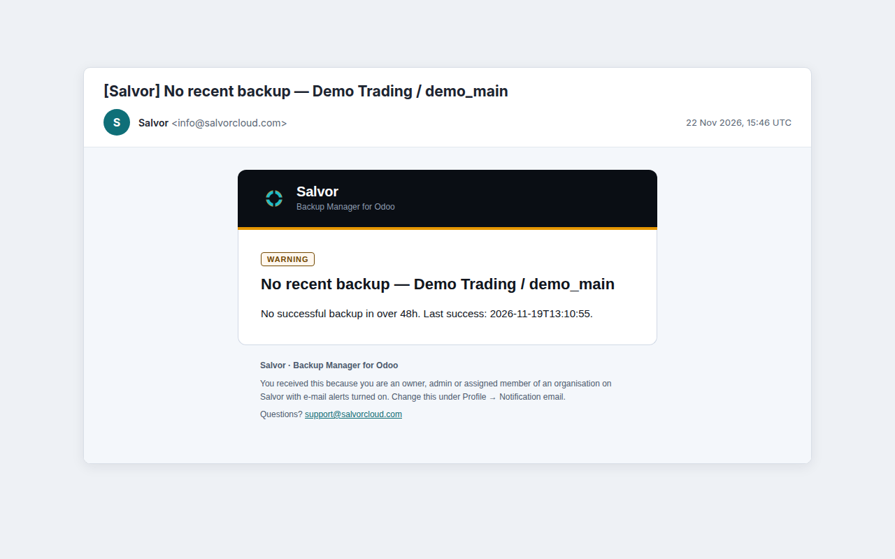

What this free module does
- Gives Salvor one narrow way to take a backup of this one database, and nothing else.
- Works with
list_db = False. Never asks for, stores or sends the master password. - Refuses every request until it is paired, then checks the access token and the caller's address on every call.
- Lists Salvor's calls, and refusals, in a Pull Log inside Odoo.
- On its own it takes no backup and sends no data. It needs a Salvor account.
What your Salvor account adds
- Salvor is a paid service, from $190 a year (Solo plan, billed yearly), with a 14-day free trial and no card.
- Backups on your schedule, pulled from outside and stored off your server, in the EU (Amsterdam / Backblaze EU Central).
- Every archive checked when it arrives: error pages and JSON answers are refused, every file in the zip is CRC-checked, the manifest is read, and a SHA-256 is recorded. A backup that fails the check is rejected, not stored.
- A warning when a backup is much bigger or smaller than the one before.
- An alert when backups stop arriving, by e-mail on every plan (Telegram on Partner and up).
- Retention rules: keep N days, the last N copies, or both.
- Every archive downloadable, in Odoo's own formats: the standard backup zip (
dump.sql,filestore/,manifest.json) or a PostgreSQL custom-format dump. Both restore with Odoo's own tools.
Restore drills
This module takes backups. Restore drills run on your own server and need a master-password or SSH connection to Salvor (SSH is on the Fleet plan).
Get started
- Create a Salvor account at salvorcloud.com (14-day free trial, no card).
- Install this module in the database you want backed up.
- In Salvor choose Add database → Connector. Salvor shows a pairing code
(
SLV-XXXX-XXXX), valid for 10 minutes, usable once. - In Odoo open Settings → Salvor Connector → Settings, paste the code and click Connect. Developer mode is not needed.
- Salvor tests the connection, and the result shows on that form.
Behind Cloudflare or your own proxy: see Works on hardened servers below.
Screenshots





The problem it solves
Odoo's advice for an internet-facing server is list_db = False. That also switches off
/web/database/backup, so every backup tool that works with the master password stops
working on exactly the servers that were secured correctly. Where the manager is left on, the
master password a backup tool holds can also create, duplicate, restore and drop databases. The
Connector replaces that with one narrow door for one database.
How it works (pull model)
- In Salvor choose Add database → Connector. Salvor shows a pairing code
(
SLV-XXXX-XXXX), valid for 10 minutes, usable once. - In Odoo an administrator opens Settings → Salvor Connector → Settings, pastes the code and clicks Connect. Developer mode is not needed.
- The module sends the code to Salvor over HTTPS. Salvor answers with an access token and the IP address its backups come from. Only the SHA-256 hash of the token is stored. The module then asks Salvor to test the connection and shows the result on this form.
- When a backup is due, Salvor calls the module and presents the token. The module checks the token
and the caller's address, then runs
pg_dump(and packs the filestore for the zip format) in a background process on your server, into a temporary file. - Salvor polls until the archive is ready, downloads it in pieces of up to 256 MiB (a broken download resumes), compares its SHA-256 with the one your server computed, and asks the module to delete the file.
Your server never opens a connection to Salvor for a backup. Salvor asks; the module answers or refuses.
What the token can do
With a valid token, from an allowed IP address, while the Connector is enabled:
- Read basic facts about this database: name, Odoo and module versions, database size, filestore size estimate, free disk in the Odoo data directory, protocol numbers and capabilities, and a restore-drill flag that is always off.
- Start, poll, download and delete a backup of this database: a PostgreSQL custom-format dump,
or a standard Odoo backup zip (
dump.sql,filestore/,manifest.json). One backup at a time, at most two stored. - Remove a leftover scratch database that this module itself created for a restore drill under 2.0.0 or 2.0.1. The module checks its own record (name and database identity) first and refuses for any other database.
The older backup call from before 2.0 (a backup streamed inside one request) is still answered, with the same checks. A backup is a complete copy of the database: treat the right to download it as read access to everything in it.
What the token cannot do
- Log in to the live database. It is not a user, a session or an API key.
- Create, duplicate, restore or drop databases through Odoo's database manager, or read or change the master password.
- Back up a database it was not paired with, call from an address that Odoo does not see as being on the allow list (an empty list refuses everyone; behind a proxy or Cloudflare, read the next section), or work while the Connector is disabled or disconnected.
- Change the module's settings, write to your data or run code on the server.
- Start a restore drill: the restore code was removed in 2.0.4. Drill calls are checked like every other
call (token, address, enabled, logged in the Pull Log) and then get
410; a body over 1 KiB gets413from Odoo.
Works on hardened servers
list_db = False: works; the module does not use/web/database/*.- No master password: never asked for, stored or sent.
dbfilterand reverse proxies: work. Behind a proxy setproxy_mode = True, have the proxy setX-Forwarded-Foritself, and keep Odoo's own port closed to the internet: the address check uses the lastX-Forwarded-Forentry (the token is still required).- Cloudflare: works once you switch on Odoo is behind Cloudflare in the module's settings.
It is off by default. With it on, a request that reaches Odoo from a Cloudflare address is
checked by the
CF-Connecting-IPheader that Cloudflare adds. That header does not show that a request came through your own Cloudflare zone, so the address check is not a protection on its own there: the access token is, and it is checked first. Through a Cloudflare Tunnel the switch has no effect. - Without a valid token the module gives one
401answer for an unknown database, a database without the module, an unpaired one and a wrong token. Odoo itself can still reveal whether a database exists; allow/salvor/only from Salvor's address at nginx or the firewall if that matters to you.
What leaves your server, and what stays
- On Connect or Rotate token: the pairing code,
web.base.url, the database name, Odoo and module versions and the protocol number, over HTTPS to Salvor. Right after that, one more HTTPS request asks Salvor to test that it can reach this database; it carries the database name, the Salvor instance number and the new access token. These are the only connections the module opens. No telemetry. - On Salvor's calls: the facts above, and the backup itself.
- The temporary backup file is not encrypted. It is readable only by the Odoo system account and exists until Salvor has downloaded it (normally minutes); if never collected, the hourly action deletes it, up to about 7 hours after the start.
- The Pull Log (Settings → Salvor Connector → Pull Log, administrators only) records Salvor's calls and most refusals: successful status polls are not logged one by one, and a refusal for a database the worker has not loaded, or one over the per-minute limit, goes to the Odoo server log only. Kept 90 days (the latest successful call stays until a newer one exists); refusals 14 days, at most 30 rows a minute, and evicted first at the 200,000-row cap.
How to revoke access
- Disconnect: the token hash and the allow list are cleared, a running backup is stopped and its file deleted, leftover drill databases are dropped (one busy at that moment is left to the hourly action).
- Untick Enabled, or empty Allowed IPs: every call is refused.
- In Salvor: Revoke access or Rotate token.
- Uninstall: stops the module's jobs, deletes its files and drops the drill databases it
created; one that is busy at that moment can remain and is logged, so check for databases
named
salvor_drill_*afterwards.
A copy of the database made with Odoo's neutralize option unpairs itself; a plain copy keeps the pairing, so click Disconnect in it.
Leftovers from 2.0.0 or 2.0.1
A scratch database (salvor_drill_...) that a drill under 2.0.0 or 2.0.1 left behind is a
full copy of production, logins included. While one exists, the settings form shows a warning with a
Drop them now button. Where Odoo's scheduled actions run for the database, the hourly
action drops it 24 hours after its record was created (6 if its upload or restore never finished, or
a restore was left running), and Disconnect drops it too. The module removes only databases it created and still
has on record; check for others by hand.
Requirements
- Self-hosted Odoo 17, 18, 19 or 20 on Linux (Community or Enterprise). Not Odoo Online; Odoo.sh is not a supported target.
pg_dumpon the Odoo server, same or newer major version than PostgreSQL.- Odoo reachable over HTTPS from Salvor, with
web.base.urlset to its publichttps://address. On Odoo 17 and 18 the URL must lead to exactly one database. - Behind Cloudflare: switch on Odoo is behind Cloudflare in the module's settings (off by
default), or restore visitor addresses at your own proxy. With the switch on, the address check
trusts Cloudflare's
CF-Connecting-IPheader; the access token is required either way. Not for Cloudflare Tunnel. - Behind your own reverse proxy (nginx or another):
proxy_mode = Trueinodoo.conf, and the proxy setsX-Forwarded-For,X-Forwarded-ProtoandX-Forwarded-Host. Behind both, both apply. - The database owned by the PostgreSQL role Odoo uses (or named in
db_name). - Free disk in the Odoo data directory: database size (+ filestore for the zip format) + 256 MiB.
- Each download piece is a normal Odoo request bound by
limit_time_real; on a link slower than about 2 MiB/s, raise it. - Upgrading: always run the latest version. To upgrade, install the new version (from this
page or from your branch on GitHub), restart Odoo, then upgrade the module (Apps > Upgrade,
or
-u salvor_connector). If you are upgrading from 1.0.0, 2.0.0 or 2.0.1, also pair again afterwards: take a new pairing code in Salvor and click Connect on the module's settings form. Salvor does not work with versions below 2.0.2. Details: SECURITY.md (github.com/ProjoMania/salvor_connector).
Support: support@salvorcloud.com. Security: see SECURITY.md.